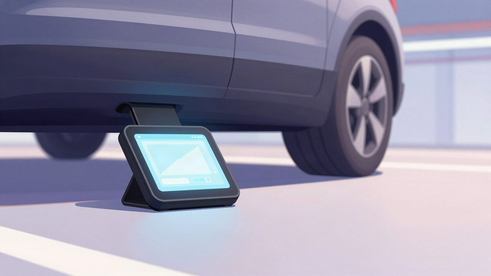
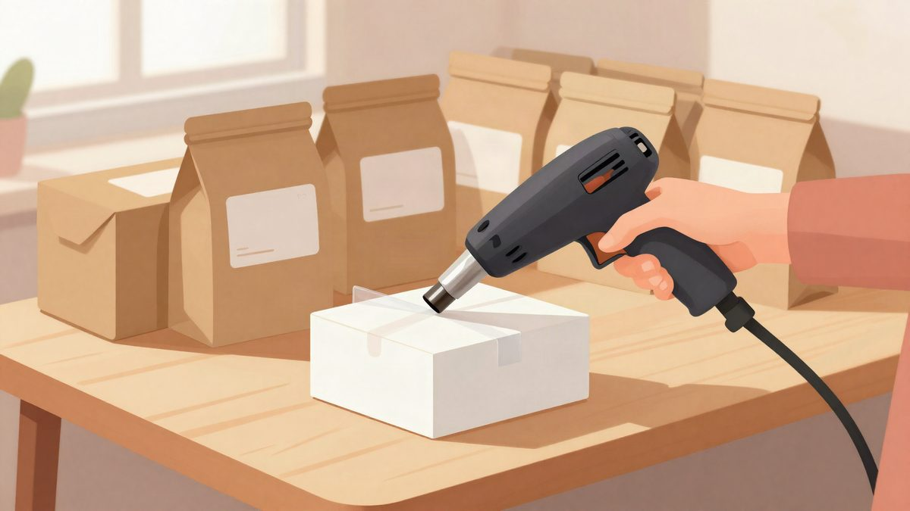

Kina: GPS tracker ispod auta da bi "slučajno" naletio na simpatiju, dobio je uvjetnu kaznu

Sud u Changchunu osudio je muškarca s prezimenom Li na godinu i dva mjeseca zatvora, uvjetno na dvije godine, uz novčanu kaznu od oko 380 eura. Tri puta je u garaži ispod auta žene do koje mu je bilo stalo postavio GPS tracker i prikupio 392 zapisa o njezinu kretanju. Uređaj su primijetili radnici servisa tijekom popravka.
Općinski sud u okrugu Shuangyang u gradu Changchunu (provincija Jilin) osudio je muškarca s prezimenom Li na godinu i dva mjeseca zatvora, uvjetno na dvije godine, uz novčanu kaznu od 3.000 juana (oko 380 eura). Optužen je za povredu osobnih podataka građana jer je ispod automobila žene s prezimenom Wang potajno postavio GPS tracker. Slučaj je objavio sam sud, a prenio ga je i portal MyDrivers.
Sud navodi da je Li bio zaljubljen u Wang. Od siječnja do lipnja 2026. tri puta je ušao u podzemnu garažu zgrade u kojoj ona živi i ispod njezina auta pričvrstio uređaj. Preko aplikacije na mobitelu pratio je njezino kretanje u stvarnom vremenu, a znao je i gdje stanuje i gdje radi. Cilj mu je bio namjestiti "slučajne" susrete i tako joj se približiti.
Kako je otkriven
Sve je izašlo na vidjelo kad je Wang odvezla auto na popravak u servis 4S dealera. Radnici su pregledom podvozja primijetili neobičan uređaj i upozorili je da joj je netko postavio GPS tracker. Wang je slučaj prijavila policiji, koja je pregledom snimki nadzornih kamera iz garaže identificirala Lija. Tehničkom analizom utvrdila je da je nezakonito prikupio ukupno 392 zapisa o njezinu kretanju.
Li je nakon privođenja priznao djelo, nadoknadio Wang materijalnu štetu i dobio njezin oprost, što je sud uzeo u obzir pri odmjeravanju kazne.
Nije jedini slučaj
MyDrivers piše da takvi slučajevi nisu izolirani. U ožujku 2026. sud u provinciji Sichuan presudio je slično u predmetu optuženog s prezimenom Tang, koji je također nezakonito postavio tracker i prikupljao podatke o tuđem kretanju.
Pekinška policija objavila je znatno veći slučaj. Skupina oko osobe s prezimenom Zhou nezakonito je prikupljala i prodavala ukupno 18.000 zapisa osobnih podataka građana, a do njih je dolazila postavljanjem GPS trackera, ali i izravnim praćenjem i snimanjem ljudi.
Što kaže zakon
Kineski propisi podatke o kretanju osobe povezuju s osobnom sigurnošću i privatnošću. Nijedna organizacija ni pojedinac ne smije nezakonito prikupljati, koristiti, obrađivati ni prenositi tuđe osobne podatke. Kazneno se odgovara već kad je nezakonito prikupljeno 50 ili više zapisa o kretanju, a u Liovu slučaju ih je bilo gotovo osam puta toliko.
Izvor: MyDrivers (快科技)
Povezani članci
- Kineski vozač umotao ETC uređaj u aluminijsku foliju i 138 puta izbjegao naplatu cestarine, dobio uvjetnu kaznu4. studenoga 2026.

Kineskinja s 9 brojeva telefona varala brend kozmetike: 10 godina i 9 mjeseci zatvora4. studenoga 2026. Tvorac OnlyFakea prvi put govori: lažne iskaznice po 15 dolara i sjevernokorejski IT radnici5. studenoga 2026.
Tvorac OnlyFakea prvi put govori: lažne iskaznice po 15 dolara i sjevernokorejski IT radnici5. studenoga 2026.